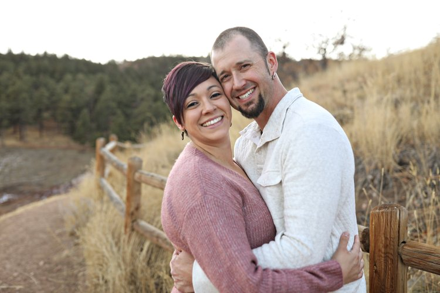
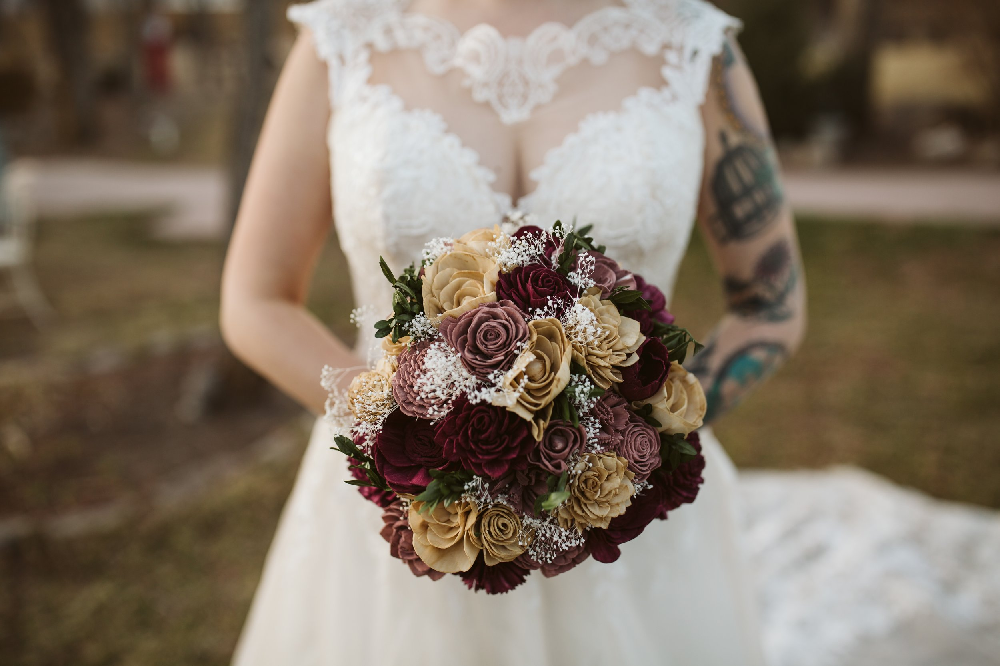

Posted on June 19, 2025
Why Hiring a Wedding Planner Like Erika in Colorado Springs is Essential
Planning a wedding is exciting—but it can also be overwhelming. That’s why enlisting a trusted wedding planner can make all the difference between stressing over vendor calls and actually enjoying the day. Colorado Springs couples are lucky to have talented planners like Erika Weeks of WED with Erika, who brings both heart and experience to the process.
🕊️ 1. How a Planner Keeps You Present on Your Wedding Day
Erika describes your wedding planning journey like “falling in love—exciting, effortless, and a bit magical.” As an award-winning Colorado planner, she offers full‑service planning, coordination, and consulting so you can truly “live in the moment without worrying about the details” .
From creating a stress-free timeline to anticipating hiccups, having someone like Erika ensures the day unfolds seamlessly so that you, your partner, and loved ones can stay fully present.
🎯 2. Experience That Keeps Your Event on Track
With nearly 200 weddings planned since 2018—including luxury celebrations at Hillside Gardens—Erika blends professionalism with warmth. She’s a former hospice nurse who excels under pressure—making her the calm, compassionate force behind the scenes.
💬 3. Real Reviews—Real Impact
Couples consistently highlight how Erika is “in the background while being active,” smoothing out unexpected issues like last-minute photographer changes—without stress.
- “She read the room… and tended to needs without you even realizing she is doing it”
- “Erika had the whole wedding running as smooth as silk”
📋 4. Your One-Stop for Vision & Logistics
Erika’s packages start from month-of coordination at $2,800 to full-service planning at $5,500, covering:
- Comprehensive communication: Unlimited calls, emails, and walkthroughs
- Vendor coordination: Booking, confirmations, day-of communications
- Timeline design: Built for golden hour, flow, and ease
- Day-of logistics: Setup, tear-down, rehearsal coordination
Every package centers your vision so you can shape your day confidently :contentReference[oaicite:6]{index=6}.
📸 5. Galleries: From Vision to Reality
Erika's galleries show romantic ceremony arches, sunset couple portraits, and joyful dance floors—as if you can practically feel the emotion through the photos. These real wedding visuals prove she delivers on her promise: meticulously planned days that look and feel magical.
💰 6. Why a Planner Isn’t an Expense—It’s an Investment
Here’s why a wedding planner is essential:
- Stress reduction: Worry less about timeline delays, vendor issues, or overlooked details.
- Vendor relationships: Planners like Erika bring trusted pros—photographers, florists, venues—to your team.
- Time savings: No more coordinating RSVPs, vendor emails, seating charts—you focus on enjoying the moment.
- Problem prevention: When hiccups happen (and they always do), your planner is ready with backup and grace.
- Mental clarity: More joy, less overwhelm, months of better sleep leading to your day.
❤️ 7. Couples Who Love Working with Erika
Reviewers highlight Erika’s ability to bring calm and flow:
“Hiring Erika was the best decision we made… what could’ve been stressful felt effortless with her by our side.”—Anika :contentReference[oaicite:7]{index=7}
“Erika kept us laughing… every moment—All because we knew Erika had everything covered.”—Liz
✏️ 8. Planning Styled to Your Story
“It’s not my wedding—it’s yours,” Erika says, focusing on what matters to you. From intimate connections with your partner to cultural traditions or eco-friendly choices, her planning adjusts to your narrative—never the other way around.
Final Thoughts
Investing in a wedding planner like WED with Erika means choosing peace of mind, emotional presence, and a day crafted exactly how you envision. Want a magical celebration in Colorado Springs? Let’s explore your options and design a day you’ll look back on—and smile—forever.
Ready to plan stress-free? Explore her services at WED with Erika, schedule a consultation, and bring your vision to life.
📸 Don't have an affordable wedding photographer for your wedding day? shoot me a text, email or call and I'd love to work with you!